Autonomous Racing Robot
Learning
- Electrical circuit design: h-bridges, buck converters, sensors, among others.
- Electrical noise protection and signal integrity..
- Writing C software (motor control, sensor data processing, state machines) on a STM32 Blue Pill.
- PID control.
- CAD modelling (SOLIDWORKS, OnShape) and rapid prototyping, manufacturing.
Project Overview
Over the summer of 2023, I designed and built an autonomous robot to compete in the annual ENPH 253 Robot Summer competition. This project involved a wide range of skills, including electrical circuit design, embedded software development, and rapid mechanical design, protyping and fabrication. Moreover, as we were only given six weeks to build the entire robot from scratch, I also learned a lot about project management and team coordination.
Competition Introduction
ENPH 253: Introduction to Instrument Design is a second-year engineering physics project course that exposes
students to a wide range of hands-on engineering skills. In teams of four, students have to design, build, and test an autonomous robot to compete in a themed racing competition.
In my year, the theme was Mario Kart! The robots had to autonomously race through a track with various obstacles as well as collect coins and blocks on the way for extra points.
Students are only given six weeks to complete the entire project.
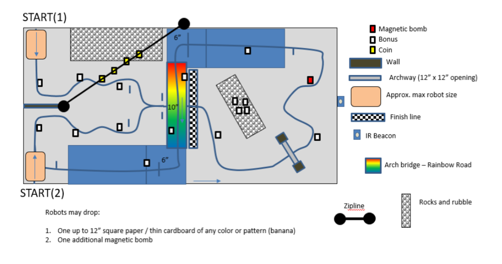
The competition is a series of one-on-one races between two teams. Each robot starts at the beginning of the track opposite of eachother.
Three points are gained for every lap a robot completes. There are multiple ways to complete a lap. The easiest way is to design your robot to follow a black taped line (on the map highlighted in blue).
There is also an IR beacon at the end of the surface that robots can hone onto for navigation.
One point is gained for every coin or blocked picked up (the gold circles and white squares on the map). Picking up a magnetic bomb (highlighted in red) forces the robot return to the start of the track and lose all its collected coins.
Shortcuts exist on the track. For example, a robot can opt to take the zipline (highlighted in black), or even jump off "Rainbow Road."
Brainstorming and Strategy
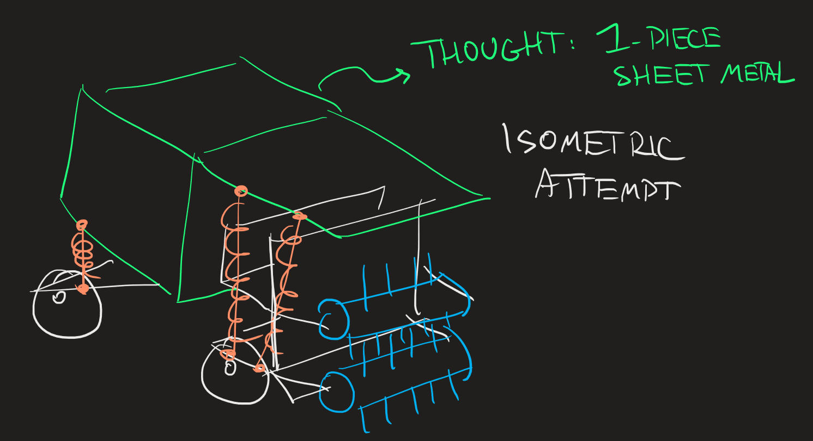
Our team brainstormed various strategies and designs to maximize our points in the competition. We decided to design a robot that would be able to
collect blocks while following both the taped line as well as hone onto the IR beacon. Using the IR beacon would allow us to take a short cut: we would be able to cut straight across first section of the racetrack instead of the winding taped line.
To reduce our lap time even further, we also decided to design our robot to be able to jump off "Rainbow Road." The yellow route below highlights our robot's proposed path.
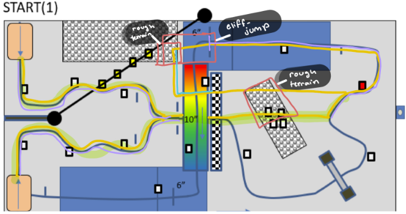
With this in mind, our robot had to have the following capabilities:
- A mechanism to pick up blocks and store them.
- Hone onto an IR beacon using an IR sensor.
- Line sensors to follow tape.
- Designed to mechanically withstand jumping off "Rainbow Road."
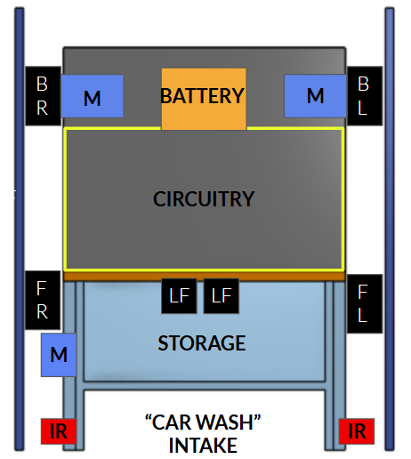
Above is a top down representation of our robot's design. The robot will be a four-wheeled car with rear-wheel drive powered by two DC motors. As the robot will be driving over rough terrain, the wheels
will be fitted with large rubber tires for better traction and cushioning. Circuitry will be placed in the center of the robot while the battery will be placed in the rear.
To pick up blocks, the robot will be designed to have a "car wash intake" mechanism controlled by a motor. This will allow the robot to collect blocks and place them in the robot's storage area while driving.
To better cushion our robot when jumping off "Rainbow Road," we also brainstormed the possibility of adding a suspension system to our robot.
Mechanical Design
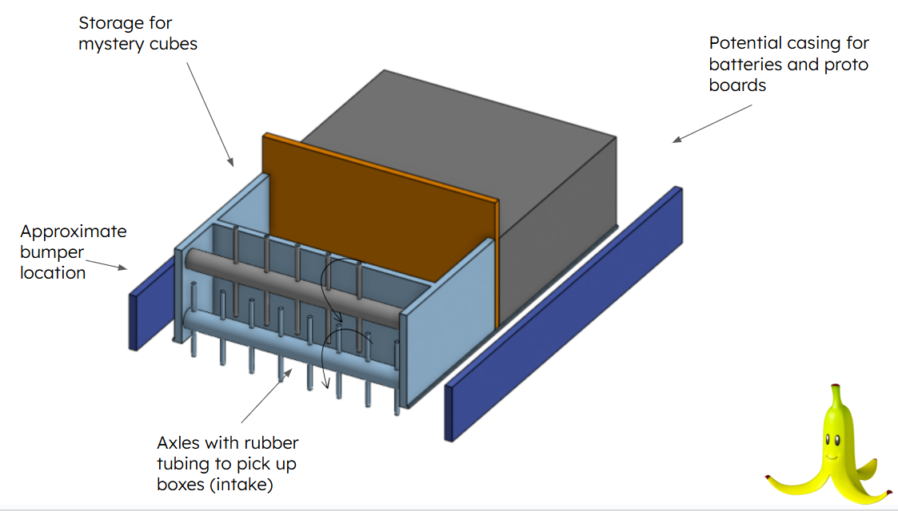
The robot was first designed on OnShape, a cloud-based CAD software. The chassis was designed to be laser printed in multiple parts using fiberwood and attached together using metal bolts.
One important feature of the robot was the Ackermann steering geometry. This design allows the inner wheel to turn at a sharper angle than the outer wheel, allowing for better handling and a reduced turning radius.
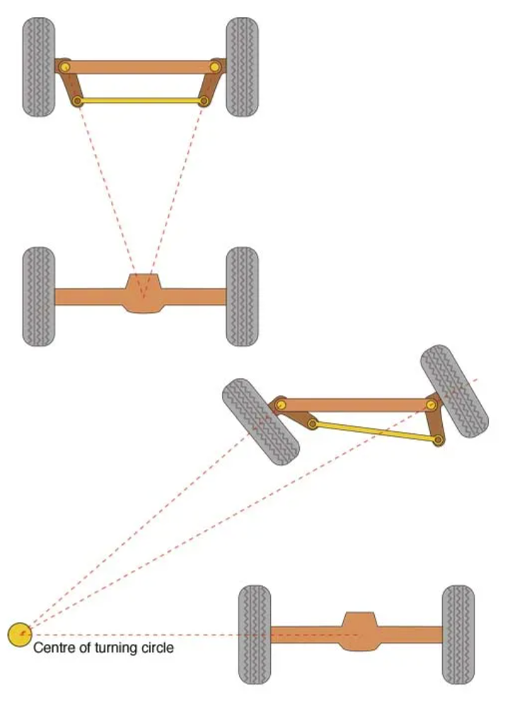
The steering bar was manufactured using laser-cutted fiberwood then mounted to the bottom of the chassis base using two 3D-printed bosses. These bosses are then bolted to the front wheels of the robot.
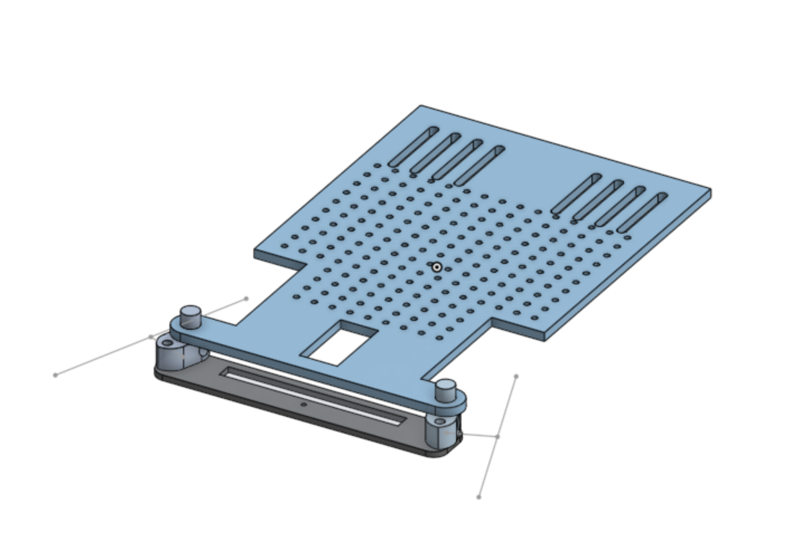
The intake consists of two rotating rubber brushes powered by a motor. As the robot drives forward, blocks are funnelled into the spinning brushes and sucked into the robot's storage area. To assist with block collection, a sheet metal ramp was fabricated with a waterjet and mounted to the front of the robot.
Electrical Design
System Overview
Below is the electrical system diagram of our robot.
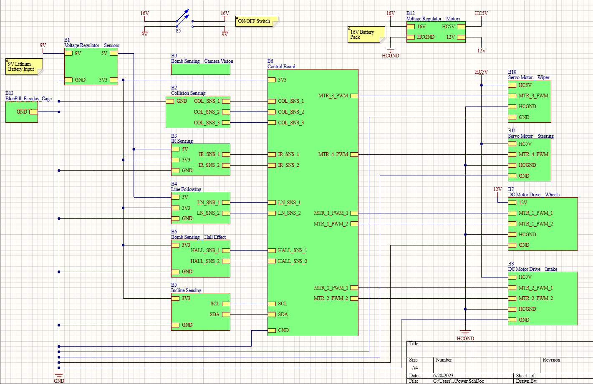
The main components of the system include:
- STM32 Blue Pill microcontroller as the main processing unit.
- Two DC motors for rear-wheel drive, controlled by an H-bridge motor driver.
- Line sensors for tape following.
- An IR sensor for beacon detection.
- A DC motor for controlling the block intake mechanism.
- A servo motor to control the steering bar.
All circuits were hand-soldered by the team.
Motor Control
For controlling the two drive motors, we used an H-bridge motor driver. The H-bridge allows us to control the direction and speed of the motors using PWM signals from the microcontroller.
PWM stands for Pulse Width Modulation: it's a digital signal that rapidly switches between HIGH and LOW. The fraction of the time that the signal stays HIGH compared to LOW is called the duty cycle, and controls the voltage output of the signal.
For example, if a PWM signal had a 50% duty cycle, it would be HIGH for half the time and LOW for the other half, resulting in an effective voltage output of half the original voltage.
An H-bridge (as shown on the right side of the diagram) consists of four MOSFETs arranged in a bridge configuration. By controlling which MOSFETs are turned on, the direction of the current through the motor can be either forward or reverse, allowing for bidirectional motor control.
With our design, however, N-type MOSFETs were used instead of P-type MOSFETs on the high side. This means that to turn on the MOSFET, the gate of the N-MOSFETs need to be driven higher than the voltage of the motor, 12V. The Blue Pill is unable to output a voltage at this level, which is why we used a gate driver instead.
The gate driver is a specialized integrated circuit that takes the low-voltage control signals from the microcontroller and translates them into the higher voltage signals needed to drive the MOSFETs in the H-bridge. Specifically, it outputs voltages at the supply voltage (12V) plus another 12V, meaning that the gate driver will be
able to drive the high-side N-MOSFETs at 24V.
To isolate the microcontroller from the noisy signals generated by the motors, optocouplers were used to transmit the PWM signals from the Blue Pill to the gate driver.
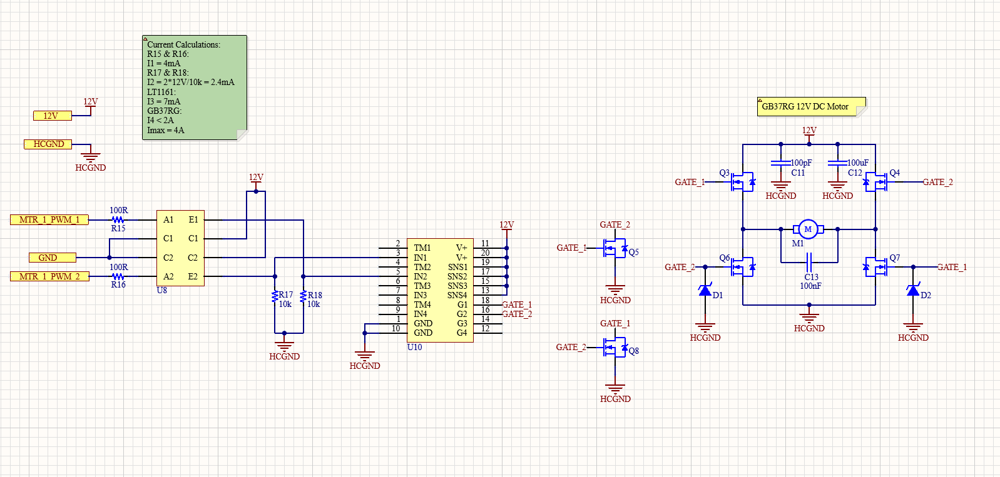
Line Following
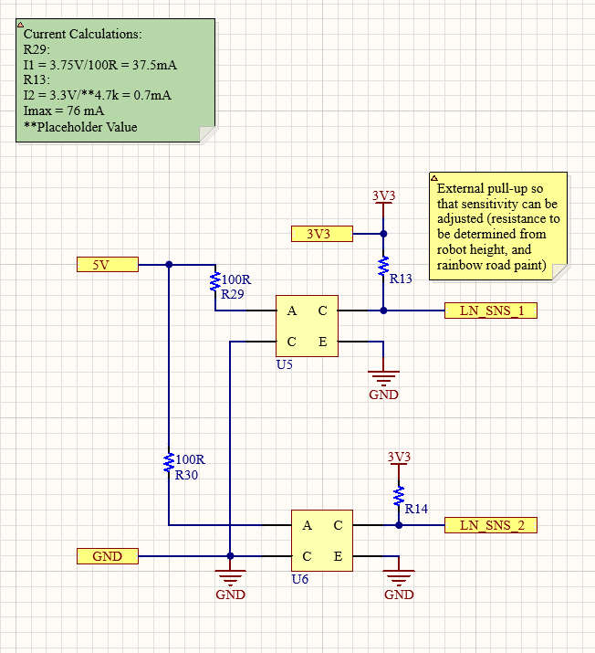
Line following was achieved through 3 analog reflectance sensors that output a varying voltage based on the amount of reflected light they receive. The sensors were mounted at the front of the robot and pointed down towards the racetrack. When the sensors are over the black tape, they will receive less reflected light and output a lower voltage. Conversely, when the sensors are over the white surface, they will receive more reflected light and output a higher voltage. This sensor data is used to determine how aligned the robot is with the tape.
Infrared Detection
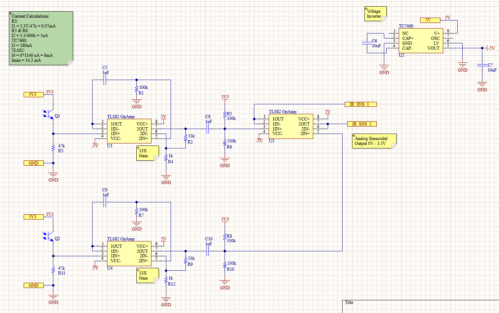
For infrared detection, two infrared phototransistors were used. These sensors output a voltage based on the amount of infrared light they receive. The phototransistors were mounted on the front of the robot where they would receive the most infrared light when the robot is facing the beacon. An amplification circuit was also added to allow detection of the infrared beacon from a further distance.
Software Design
The robot's software was written in C using the STM32CubeIDE. The main components of the software include:
- Motor control using PWM signals.
- Sensor data processing from line sensors and IR sensor.
- State machine to manage different robot states (e.g., line following, IR following, jumping).
- PID control for line-following.
PID control was implemented for line and IR following. PID stands for Proportional-Integral-Derivative: it's a control algorithm that calculates an error value as the difference between a desired setpoint and a measured point, then applies a correction based on proportional, integral, and derivative terms.
- The proportional term produces an output value that is scaled by a constant to the current error value. It provides a correction that is directly related to the magnitude of the error.
- The integral term produces an output value that is proportional to the integral of the error over time. It helps eliminate any residual steady-state error.
- The derivative term produces an output value that is proportional to the rate of change of the error. It provides a correction based on how quickly the error is changing, which can help improve stability and reduce overshoot.
Extensive testing was done to adjust the PID values to ensure that the robot could follow the tape and IR.
Conclusion
Overall, this project was the most intensive and rewarding project I've done in my engineering career to date. I had an opportunity to combine a wide range of skills I've learned in my courses and apply them to a large, complex project.
Moreover, I also learned new skills such as PID control, electrical circuit design (h-bridges, buck converters, optocouplers), and fabrication techniques (laser cutting, 3D printing, sheet metal fabrication).
I am incredibly grateful to have had the opportunity to work on this project with my team, and I am proud of what we were able to accomplish in such a short amount of time.